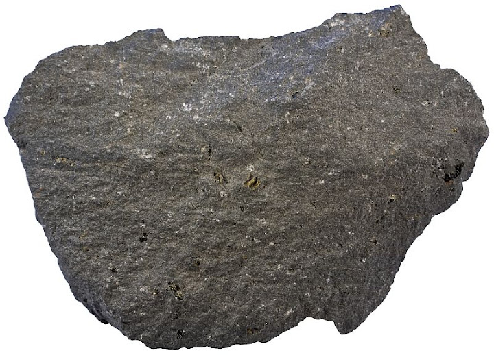
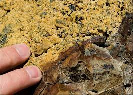

New here?

New to rockhounding and don't know where to start? Not to worry, we will show you the ropes. Click below to head over to our "Getting Started" guide
Getting StartedRocks & Minerals In Hawaii


Hawaii rockhounding maps to hunt for crystals, gemstones, minerals, and ores. Hawaii's unique volcanic geology makes it an exciting destination for rockhounding enthusiasts. From the green sand beaches of Papakōlea to the peridot-rich sands of Green Sands Beach, collectors can find olivine, coral, and other volcanic minerals throughout the islands.
Shop Our Merch!

We have tons of cool t-shirts, hats, water bottles, and stickers. Show off your love for rockhounding with our high-quality merchandise.
Visit StorePlease always bring appropriate attire and do research before venturing out to rock hunt and crystal hunt. Also, be sure to verify that the location you want to hunt at is available for public access. Rockhounding.org does our best to verify, but it is your responsibility to verify as well because sometimes things change. We are not liable for any actions you take from the information you find on this site.
Snacks & Hydration

Energy Bars
Stay energized with the best energy bars for your rockhounding adventures.
Our Favorites

Must Have Rockhounding Tools


Keeping accurate records of Rockhounding & Gemstone Hunting Locations is a community effort! Know of a good spot that is missing from our maps? Feel free to submit it below. Thank you for your contributions to the rockhounding community!
Popular Rocks, Crystals, & Gemstones In Hawaii
-
 Olivine
OlivineOlivine, also known as the Hawaiian gemstone Peridot, can be found in volcanic rocks throughout the Hawaiian Islands, especially at Papakolea Beach.
Read More -
 Basalt
BasaltBasalt is the most common rock type in Hawaii, formed from the rapid cooling of lava flows on the surface of the islands.
Read More -
 Coral
CoralCoral can be found on the shores and in the waters surrounding the Hawaiian Islands, with many species thriving in the state's warm, tropical waters.
Read More -
 Calcite
CalciteCalcite can be found in limestone and other sedimentary rocks throughout Hawaii, as well as in the state's extensive cave systems.
Read More -
 Petrified Wood
Petrified WoodThough rare, petrified wood can be found in some areas of Hawaii, primarily on the Big Island, where ancient forests were buried by volcanic ash and lava.
Read More -
 Quartz
QuartzQuartz can be found in Hawaii's igneous and metamorphic rocks, as well as in hydrothermal veins and cavities throughout the islands.
Read More -
 Marine Fossils
Marine FossilsMarine fossils, such as coral and mollusk shells, can be found in Hawaii's sedimentary rocks and along the shoreline, offering a glimpse into the state's ancient marine life.
Read More -

Hawaiite
Hawaiite is a volcanic rock found primarily on the Big Island of Hawaii, and is named after the state. It is similar to basalt but has a higher percentage of silica and alkali metals.
Read More -

Palagonite
Palagonite is a yellowish volcanic rock formed by the interaction of hot lava with water, and can be found in various locations throughout the Hawaiian Islands, including the famous Green Sand Beach.
Read More -
 Obsidian
ObsidianObsidian, a volcanic glass, is rare in Hawaii due to the state's low-silica lava. However, small amounts can still be found in some areas where the lava cooled rapidly, such as on the Big Island.
Read More
Popular Rock Hunting Areas In Hawaii
-
 Green Sand Beach
Green Sand BeachAlso known as Papakōlea Beach, this unique location on the Big Island is famous for its green olivine sand, a mineral that forms from volcanic rock.
Read More -
Waianapanapa State Park
This park on Maui features black sand beaches composed of basalt and other volcanic materials, as well as lava tubes, sea caves, and a blowhole.
Read More -
Makalawena Beach
Located on the Big Island, this remote beach offers the chance to find unique volcanic rocks and coral fragments along its white sand shoreline.
Read More -
Glass Beach
Situated on Kauai, Glass Beach is covered in small pieces of sea glass, formed from broken bottles and other glass materials polished by the ocean.
Read More -
Kaimu Black Sand Beach
A newly formed black sand beach on the Big Island, Kaimu offers opportunities to find unique volcanic rocks, including obsidian and basalt, along its shoreline.
Read More -
Kahuku Beach
Located on Oahu's North Shore, Kahuku Beach offers a chance to find sea glass, shells, and coral fragments, as well as small pebbles and volcanic rocks.
Read More
Geology of Hawaii
Hawaii's geology is dominated by volcanic activity, as the islands are situated atop a volcanic hotspot in the Pacific Ocean. The state's geological history spans millions of years, with the oldest island, Kauai, forming around 5 million years ago and the youngest, Hawaii Island, still actively growing due to ongoing volcanic eruptions.
The islands are primarily composed of basaltic lava flows, which have created the iconic shield volcanoes that characterize the Hawaiian landscape. Additionally, Hawaii's geology includes various volcanic features, such as cinder cones, lava tubes, and calderas.
Hawaii's unique geology has given rise to a variety of minerals and gemstones, including olivine, peridot, and various forms of volcanic glass, such as obsidian and Pele's hair. The state's volcanic history provides numerous rockhounding opportunities, from collecting minerals on beaches to exploring lava tubes and other volcanic formations.